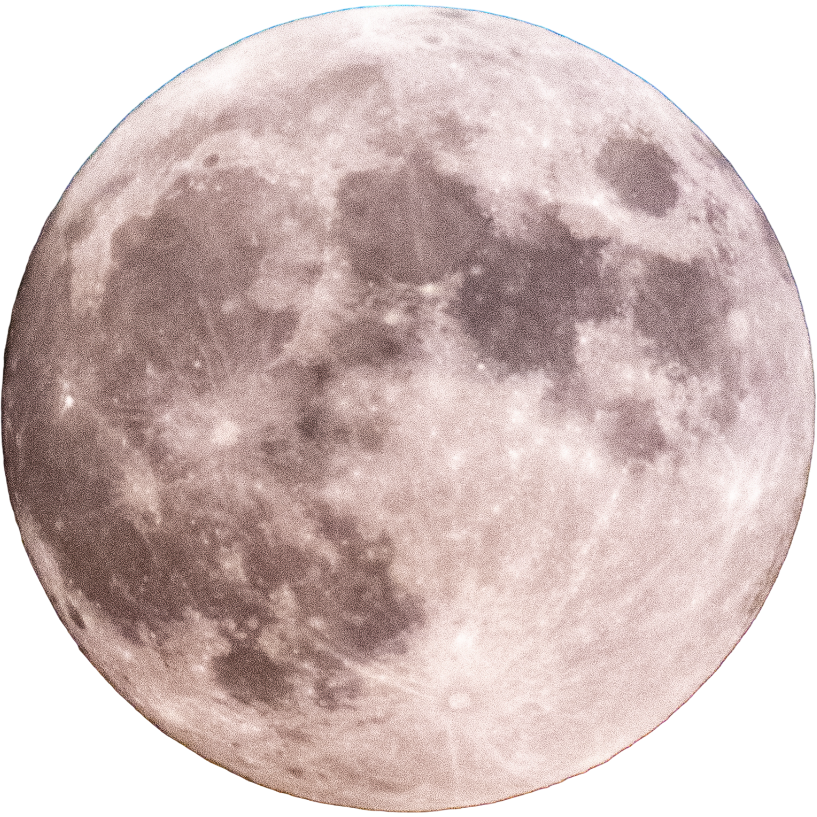

LUNAR AUDIO EXPERIMENT ✦ DATA-DRIVEN EXPERIENCE
MOON DATA: CONNECTING
SIDE A / THE LISTENING ROOM
THE NOT SO
DARK SIDE
OF THE MOON.
Sound moves the spectrum. The moon changes the light.
MOON PHASELoading…
ILLUMINATION—
MOONRISE—
LUNAR CONTROLS & AUDIO SETTINGS
EXPLORE LUNAR CYCLE APPROXIMATE DATES
Lunar data: Powered by SunriseSunset.io • Mississauga (default)

SIDE B / YOUR SOUNDTRACK
No track selected
Drop audio files to begin
0:000:00
BASS
MID
TREBLE
YOUR ORBIT 00
DROP YOUR AUDIO INTO ORBITMP3, WAV, OGG, M4A, FLAC (browser support varies) • Drag songs to reorder
Local audio stays in your browser session. Direct audio URLs must allow cross-origin access for visualization. YouTube/Spotify page links are not direct audio files.